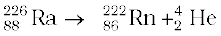
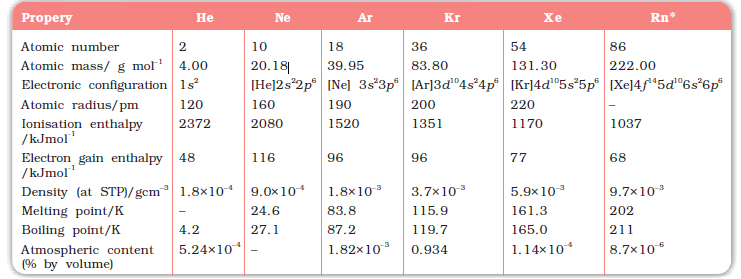
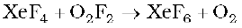
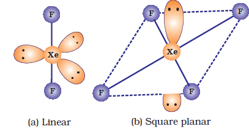
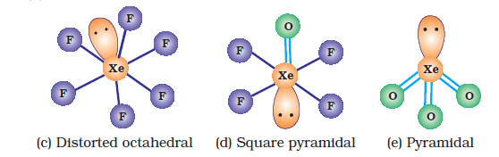

XeF4(s)
XeF4(s)7.23 Group 18 Elements
Group 18 consists of six elements: helium, neon, argon, krypton, xenon and radon. All these are gases and chemically unreactive. They form very few compounds. Because of this they are termed noble gases.
All the noble gases except radon occur in the atmosphere. Their atmospheric abundance in dry air is ~ 1% by volume of which argon is the major constituent. Helium and sometimes neon are found in minerals of radioactive origin e.g., pitchblende, monazite, cleveite. The main commercial source of helium is natural gas. Xenon and radon are the rarest elements of the group. Radon is obtained as a decay product of 226Ra.

Example 7.20
Why are the elements of Group 18 known as noble gases ?
Solution
The elements present in Group 18 have their valence shell orbitals completely filled and, therefore, react with a few elements only under certain conditions. Therefore, they are now known as noble gases.
The important atomic and physical properties of the Group 18 elements along with their electronic configurations are given in Table 7.12. The trends in some of the atomic, physical and chemical properties of the group are discussed here.
Table 7.12: Atomic and Physical Properties of Group 18 Elements

7.23.2 Electronic Configuration
All noble gases have general electronic configuration ns2np6 except helium which has 1s2 (Table 7.12). Many of the properties of noble gases including their inactive nature are ascribed to their closed shell structures.
7.23.3 Ionisation Enthalpy
Due to stable electronic configuration these gases exhibit very high ionisation enthalpy. However, it decreases down the group with increase in atomic size.
7.23.4 Atomic Radii
Atomic radii increase down the group with increase in atomic number.
7.23.5 Electron Gain Enthalpy
Since noble gases have stable electronic configurations, they have no tendency to accept the electron and therefore, have large positive values of electron gain enthalpy.
Physical Properties
All the noble gases are monoatomic. They are colourless, odourless and tasteless. They are sparingly soluble in water. They have very low melting and boiling points because the only type of interatomic interaction in these elements is weak dispersion forces. Helium has the lowest boiling point (4.2 K) of any known substance. It has an unusual property of diffusing through most commonly used laboratory materials such as rubber, glass or plastics.
Example 7.21
Noble gases have very low boiling points. Why?
Solution
Noble gases being monoatomic have no interatomic forces except weak dispersion forces and therefore, they are liquefied at very low temperatures. Hence, they have low boiling points
Chemical Properties
In general, noble gases are least reactive. Their inertness to chemical reactivity is attributed to the following reasons:
(i) The noble gases except helium (1s2) have completely filled ns2np6 electronic configuration in their valence shell.
(ii) They have high ionisation enthalpy and more positive electron gain enthalpy.
The reactivity of noble gases has been investigated occasionally, ever since their discovery, but all attempts to force them to react to form the compounds, were unsuccessful for quite a few years. In March 1962, Neil Bartlett, then at the University of British Columbia, observed the reaction of a noble gas. First, he prepared a red compound which is formulated as O2+PtF6–. He, then realised that the first ionisation enthalpy of molecular oxygen (1175 kJmol–1) was almost identical with that of xenon (1170 kJ mol–1). He made efforts to prepare same type of compound with Xe and was successful in preparing another red colour compound Xe+PtF6– by mixing PtF6 and xenon. After this discovery, a number of xenon compounds mainly with most electronegative elements like fluorine and oxygen, have been synthesised.
The compounds of krypton are fewer. Only the difluoride (KrF2) has been studied in detail. Compounds of radon have not been isolated but only identified (e.g., RnF2) by radiotracer technique. No true compounds of Ar, Ne or He are yet known.
(a) Xenon-fluorine compounds
Xenon forms three binary fluorides, XeF2, XeF4 and XeF6 by the direct reaction of elements under appropriate experimental conditions.
Xe (g) + F2 (g) XeF2(s)
(xenon in excess)
Xe (g) + 2F2 (g) XeF4(s)
(1:5 ratio)
Xe (g) + 3F2 (g) XeF6(s)
(1:20 ratio)
XeF6 can also be prepared by the interaction of XeF4 and O2F2 at 143K.

XeF2, XeF4 and XeF6 are colourless crystalline solids and sublime readily at 298 K. They are powerful fluorinating agents. They are readily hydrolysed even by traces of water. For example, XeF2 is hydrolysed to give Xe, HF and O2.
2XeF2 (s) + 2H2O(l) → 2Xe (g) + 4 HF(aq) + O2(g)
The structures of the three xenon fluorides can be deduced from VSEPR and these are shown in Fig. 7.9. XeF2 and XeF 4 have linear and square planar structures respectively. XeF6 has seven electron pairs (6 bonding pairs and one lone pair) and would, thus, have a distorted octahedral structure as found experimentally in the gas phase.
Xenon fluorides react with fluoride ion acceptors to form cationic species and fluoride ion donors to form fluoroanions.
XeF2 + PF5 → [XeF]+ [PF6]–; XeF4 + SbF5 → [XeF3]+ [SbF6]–
XeF6 + MF → M+ [XeF7]– (M = Na, K, Rb or Cs)
(b) Xenon-oxygen compounds
Hydrolysis of XeF4 and XeF6 with water gives Xe03.
6XeF4 + 12 H2O → 4Xe + 2XeO3 + 24 HF + 3 O2
XeF6 + 3 H2O → XeO3 + 6 HF
Partial hydrolysis of XeF6 gives oxyfluorides, XeOF4 and XeO2F2.
XeF6 + H2O → XeOF4 + 2 HF
XeF6 + 2 H2O → XeO2F2 + 4HF
XeO3 is a colourless explosive solid and has a pyramidal molecular structure (Fig. 7.9). XeOF4 is a colourless volatile liquid and has a square pyramidal molecular structure (Fig.7.9).

Fig. 7.9 The structures of (a) XeF2 (b) XeF4 (c) XeF6 (d) XeOF4 and (e) XeO3
Example 7.22
Does the hydrolysis of XeF6 lead to a redox reaction?
Solution
No, the products of hydrolysis are XeOF4 and XeO2F2 where the oxidation states of all the elements remain the same as it was in the reacting state.
Uses: Helium is a non-inflammable and light gas. Hence, it is used in filling balloons for meteorological observations. It is also used in gas-cooled nuclear reactors. Liquid helium (b.p. 4.2 K) finds use as cryogenic agent for carrying out various experiments at low temperatures. It is used to produce and sustain powerful superconducting magnets which form an essential part of modern NMR spectrometers and Magnetic Resonance Imaging (MRI) systems for clinical diagnosis. It is used as a diluent for oxygen in modern diving apparatus because of its very low solubility in blood.
Neon is used in discharge tubes and fluorescent bulbs for advertisement display purposes. Neon bulbs are used in botanical gardens and in green houses. Argon is used mainly to provide an inert atmosphere in high temperature metallurgical processes (arc welding of metals or alloys) and for filling electric bulbs. It is also used in the laboratory for handling substances that are air-sensitive. There are no significant uses of Xenon and Krypton. They are used in light bulbs designed for special purposes.